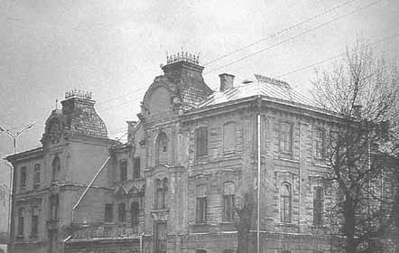
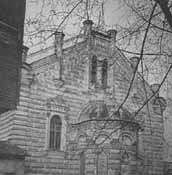
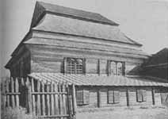
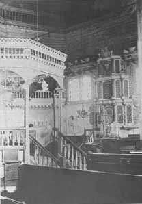
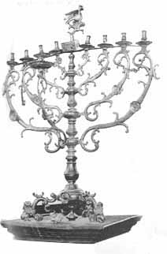
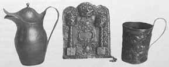

|
||||||||||||||
BETWEEN THE WORLD WARS - 2Antisemitism and Pogroms Antisemitism, an ancient scourge in Poland, was sharply aggravated in the inter-war period as alienation between Jews and Poles intensified. The antisemitic atmosphere was most acutely felt in spheres in which Jews came into direct contact with Poles, such as in Polish schools or on the sports field. Verbal abuse of Jewish children in Polish schools was commonplace. Polish high-school students, influenced by the Endeks, forced their Jewish comrades to stand during lessons; the teachers, even those who were not antisemites, were usually afraid to intervene. Jewish children often fell victim to antisemitic incidents on their way to or from school. Sundays were notoriously violent. On the way to the soccer stadium, Jews were set upon and beaten, and a victory by the Jewish side was sufficient reason for renewed attacks. Jews were also assaulted on the street and in public parks. The recurring violence led Jewish youngsters to organize defense groups. The Brit ha-Hayal (“Soldier’s Alliance”) in Grodno, consisting of strong young men, often came to the defense of individual Jews and even of the entire Jewish quarter. No pogroms were perpetrated as long as Josef Pilsudski was in power. Although Pilsudski did not refer publicly to the Jewish question, he never excluded the Jews from the category of citizens possessing full and equal rights in the state. His personality was the major factor in the preservation of order in Poland. However, after his death, in May 1935, and as a result of economic stagnation and the rising strength of National Socialism in Germany, the influence of the Endecja party grew and antisemitism gathered new momentum in Poland. In the years before the outbreak of World War II, a wave of anti-Jewish pogroms washed across the entire country. Grodno was not spared. On the night of June 6, 1935, in the course of a fight that broke out in a dance hall, a Jewish youngster stabbed his Christian adversary, who died on the way to the hospital. The deceased was a former sailor, and the rumor was circulated that a Jew had murdered a Polish soldier. When the police arrested the knife-wielding Jew, the episode seemed to have ended. But the next day anti-Jewish riots erupted after the funeral. About 1,000 people attended the last rites, among them many Endeks and members of the underworld who demanded vengeance. A large mob armed with iron bars, knives, and clubs stormed out of the cemetery and made its way to the city center. Within half an hour lawless gangs were rampaging across Grodno and attacking every Jew they encountered. As it happened, it was the Shavuot festival and many Jews were out walking and fell prey to the mob. The rioters smashed shop-windows in the commercial district, looted widely, and left a trail of destruction. Some rioters entered the Jewish quarter and smashed doors and windows with rocks and bars. They spared only the Shulhoif and the Troickie quarter, where physically imposing Jews – mainly butchers, porters, and wagoners – lived. Click to Enlarge Map GRODNO BETWEEN THE WORLD WARS 2. Shulhoif 3. "Tarbut" elementary school 4. "Tarbut" high school and teachers' seminary 5. The Community House (Kehillah House) 6. The Slobodka quarter 7. The Slobodka synagogue 8. The Jewish orphanage 9. The Jewish old-age home 10. The Jewish hospital 11. The Yavneh religious elementary school 12-15. The Great Synagogue 16. The Jewish school for commerce 17. Shabatobka elementary school (closed on Saturday) 18. ORT vocational boys' school 19. Vocational school for girls 20. The Talmud Torah boys' school 21. The Troickie quarter 22. "Chayei Adam" synagogue 23. Municipal Theater 24. CISHO School 25. The Jewish Trade House and the Jewish Commercial Bank Theater 26. The "Folksbank" 27. Kolozhe Quarter 28. Vegetable gardens cultivated by Jews 29. Kosowski's flour-mill 30. Starowolki's bicycle factory and motorcycle factory 31. Oil factory 32. Efron's sawmill 33. Braun Brother's plywood factory 34. Yizerski's glass factory 35. The "re'ali" high school 36. The Fershtot ("Across the River") suburb 37. The Great Yeshivah 38. Yurzike - The original Jewish quarter 39. Shersevski's tobacco factory 40. The Frejdovicz cement-pipes & building-materials stores & depots The Jews organized quickly. Community leaders and representatives of Jewish organizations met at Ha-Shomer ha-Za’ir headquarters and chose a self-defense committee consisting of Aharon Yizersky, Aharon Rubinczik, and Shmuel Diamant. The communists mobilized 200 people, ten of them bearing firearms. Teenagers were given the job of sitting by phones so as to coordinate communications and intelligence. A number of Poles, mostly friends or acquaintances of Jews, offered their help. Throughout the entire episode the police were flagrantly absent, claiming afterward that they had been occupied elsewhere. The local authorities tried to suppress the event, but the Jews decided to go to court. In the course of the trial, the authorities blamed the Jews, and the incident ended with brief suspended sentences for the defendants; their leader was sentenced to one year in prison, was released on bail, and later pardoned. A letter from the Va’ad ha-Kehillah to the district governor described the casualties and the damage inflicted during the riots of June 7-8, 1935, in Grodno: Gedaliah Becher and Yisrael Berzowski were killed; Shlomo Pozniak was hospitalized and his family was threatened with eviction from their apartment because they could not pay the hospital bill; Leib Buchinsky was hospitalized in Warsaw awaiting surgery and was in danger of losing his hand; all told, forty to fifty Jews were injured, and about 300 suffered property damage or lost their jobs. Damage was estimated at 30,000 zloty, but the Va’ad asked for only 5,000 zloty in compensation, and, after a lengthy delay the district authorities approved 1,000 zloty, to be divided among the injured families. Apart from the two victims mentioned above, a third Jew was killed seventeen days after the pogrom while passing in the street. This was not the last violent eruption of antisemitism in Grodno. In the remaining four years before the war there were increasing acts of hooliganism and violence motivated by antisemitism. The Jewish Reaction Grodno’s Jews did not accept the economic boycott passively and put up a relentless struggle for their right to work and earn a living. In the 1930s, as economic antisemitism intensified, the Jewish community also held protest rallies and demonstrations. On May 24, 1937, for example, they closed their shops and demonstrated for their right to live and work in peace. A gathering of Jewish small merchants from the entire region, held in Bialystok in August 1938, called on the authorities to put an end to the activity of the endeks who were generating hatred among the populace. A Jewish delegation from Grodno met with the official in charge of security to urge that the peace and security of the city’s inhabitants be preserved, particularly in the commercial sphere. On October 20, 1937, the entire Jewish community demonstrated against the “ghetto benches” that had been installed in the country’s universities and schools of higher education. However, none of the appeals – to the authorities or to the public – had any effect, and the situation continued to deteriorate. At the same time Jewish communities and institutions organized for mutual assistance, establishing cooperatives, introducing direct-aid methods, making available professional training, and so forth. In Grodno the Va’ad ha-Kehillah was forced to cut its staff’s salaries so that it could offer both one-time grants and monthly relief to the unemployed, who received no government aid. An increasing number of community members began turning to the charitable organizations; “poverty cards,” which exempted their holders from tax payments, were introduced. Entrepreneurs tried their hand in new branches of commerce. For example, wagon owners from Sopockin, near Grodno, who used to make a living by hauling goods to and from the city, got together and bought a truck, and then a bus, and established a company that transported both people and goods between the two destinations. Many Jews, particularly the young, opted for emigration. Some joined hakhsharah (pioneer-training) groups and reached Eretz Israel legally; others drew on the help of relatives in the United States and managed to emigrate despite the stringent immigration laws. Most of the other developed countries also imposed virtually insurmountable immigration barriers. Although, at the end of the 1930s, agreements were reached with Latin American states to take in Polish emigrants, shopkeepers and lessees were not welcome, nor were Jews in general. Among the countries in which Jews found refuge were Canada, Australia, Argentina, Brazil, Mexico, and Cuba. The majority, however, and particularly those with families, remained in Poland. The complex logistical problems and enormous costs involved in the emigration of an entire family virtually ruled out this option. Community Life and Institutions Official Status and Organization. The Treaty of National Minorities, which was signed between Poland and the Allies at Versailles on June 28, 1919, assured the minorities of their physical safety, freedom of religion, the right to maintain educational, welfare, and charitable institutions, and to educate their children in their national language. The Treaty of Riga (March 18, 1921) also guaranteed the rights of the minorities in Poland. Under Article 7, Poland was committed to ensure the minorities the freedom to cultivate their culture, religion, and language. In practice, however, the Polish government deprived the Jews of these rights and adopted a discriminatory policy against them in most areas. In the first years of the independent Polish state, the Kehillah and its institutions continued to function almost as before – under government supervision and under pressure to confine their activity to religious activities. However, as the Kehillah was not permitted to levy mandatory taxes, it had to finance its budget independently, primarily by means of the services it rendered. Thus the public had to pay for the upkeep of the Jewish religious institutions. This was the situation in most of Poland (in the former Congress Poland the Dozor Boznicy [“Synagogue Council,” which resembled the French consistory introduced by Napoleon I] remained in effect). Only in 1927 was a new constitution approved for the Jewish communities in Poland in which the right to levy statutory taxes was included. The Grodno Community Council was headed by the city’s most affluent Jews. The first Community Council, which served from 1918 to 1921, consisted of twenty members, of whom ten were members of the executive (the Va’ad), representing the Bund, the Zionist Poalei Zion and Ze’irei Zion, and the haredim (ultra-Orthodox). The executive, which met in closed session, conducted its business in Yiddish, but recorded the minutes in the official language of the state, as the government authorities demanded. A yeshiva near the synagogue   The Great Synagogue building (today)  The wooden synagogue in the "Across the River" suburb (burnt at the beginning of World War II)  Interior of the wooden synagogue in the suburb  Menorah from the synagogue  Religious articles from the synagogue Among the relief and social-welfare institutions in Grodno were benevolent funds that provided interest-free loans to small shopkeepers and artisans who were in financial need. Rather than interest, the recipients committed themselves to fixed monthly payments in order to cover the fund’s expenses. The fund’s capital came from three sources: stocks, aid from the United States, and assistance from the national organization of benevolent funds in Poland. The Jewish medical system in Poland during the inter-war period did not cover everyone. Workers in large enterprises, teachers, and public servants had medical insurance and were treated free of charge. However, large sections of the public were not entitled to any health services, and private medicine flourished. The state health authorities had virtually nothing to do with public health and sanitation and, other than inoculating the population against smallpox, did nothing to curb infectious diseases and epidemics. “Linat Zedek” was a Jewish association of volunteers who sat with the sick at night so that family members could rest; they also loaned medical equipment to ill persons who could not afford the purchase price, provided the indigent with medical attention, medicines, and even financial aid, and, if necessary, financed medical treatment in hospitals in Grodno or Bialystok. The association’s funds were raised from the proceeds from stage performances and “film days.” There were many other relief and charitable institutions and associations in the community, including an old-age home, an orphanage, the rescue committee (Va’ad ha-Hazalah), the yeshivah’s kitchen, lodgings for transients, the Hekdesh (accommodations for the poor and the sick), Kimha de-Piskha (a campaign to supply the poor with matzah for Passover), Hakhnasat Kallah (dowries for poor brides), and Lehem Ani’im (bread for the poor). There was also a legal bureau in which Jewish lawyers, on a rotating basis, offered free legal advice. TOZ arranged medical treatment and monitoring for pregnant, post-natal, and nursing women; organized compulsory medical checkups in the schools; and ran summer camps for children. However, not everything in the Kehillah was on a volunteer basis. The Community Council was entitled to request payment for various services, such as ritual slaughter, marriages, circumcisions, and burials. Taxes, generally in the form of a commitment to make a monthly contribution, were imposed on the affluent in order to cover the cost of the various staffs and the maintenance of institutions. Additional sources of income were financial aid from former residents who had settled in the United States and from the Swiss branch of the Joint Distribution Committee. The Grodno Va’ad ha-Kehillah occasionally offered welfare aid to Jews outside the city as well. For example, the Community Council was one of the first to respond to the call that was issued on June 6, 1922, to provide generous assistance to starving Jews in Russia and the Ukraine. Grodno’s Jews also came to the aid of Iwia Jews after the pogrom of 1929, and assisted the Jews of Lunna in 1931. In 1927, following an earthquake in Palestine, there was a call in Grodno to establish a committee in order to coordinate aid for the casualties. A leaflet urged all the worshippers at the Beit ha-Midrash and the representatives of Jewish organizations and societies to meet in the office of the Va’ad ha-Kehillah in order to launch the aid operation. Involvement of a different kind was manifested in the form of concern for Germany’s Jews. On May 1, 1933, the Kehillah sent the League of Nations a petition protesting the persecution of the Jews in Germany, and, in late 1938, when Jewish citizens of Poland were deported from Germany to Zbac szyn (Zbonshin) on the Polish border, the community ´ collected clothing and food for the refugees. Some of them actually reached Grodno (including former residents of the city) and were helped to settle there by the Jewish community. Home |
||||||||||||||
{kind=link}